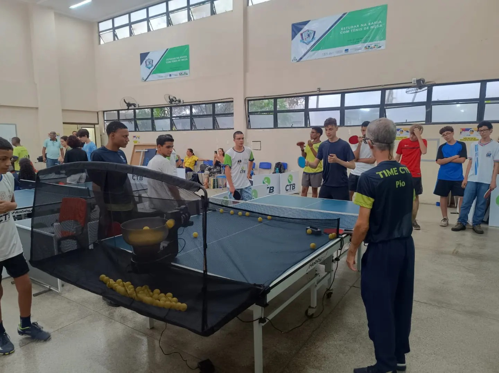
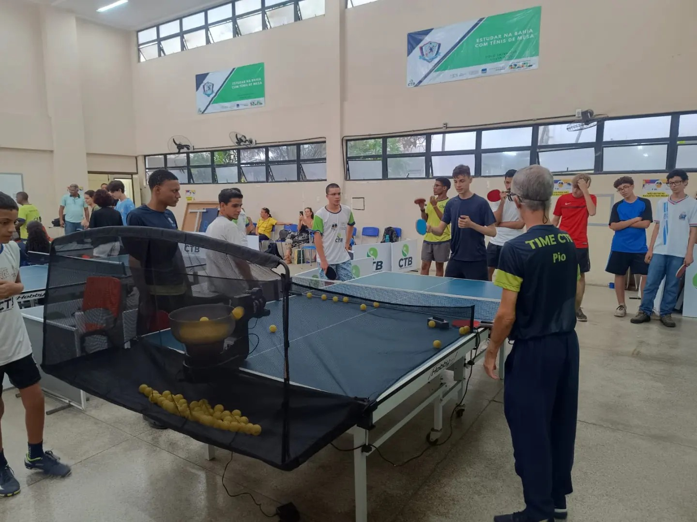
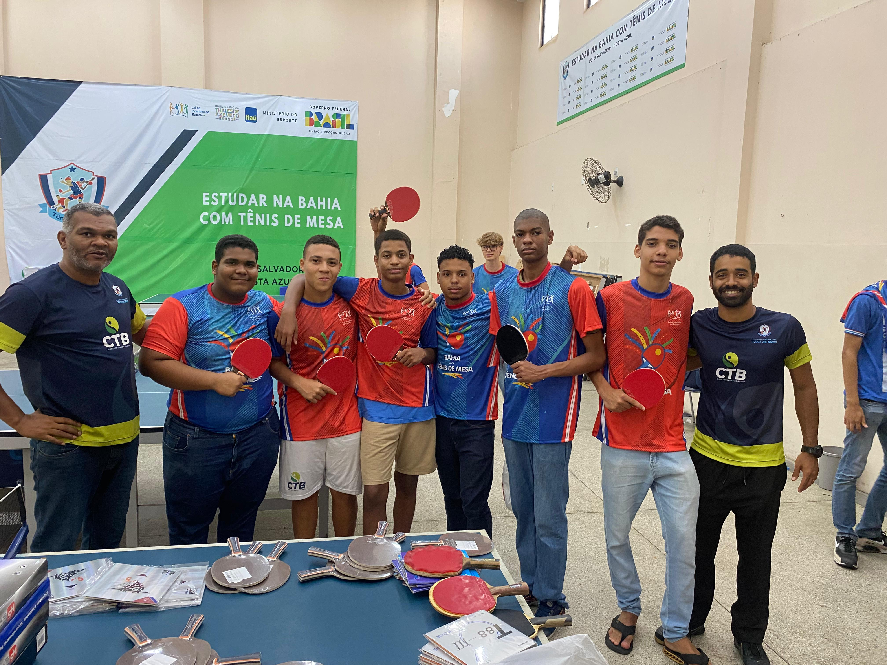
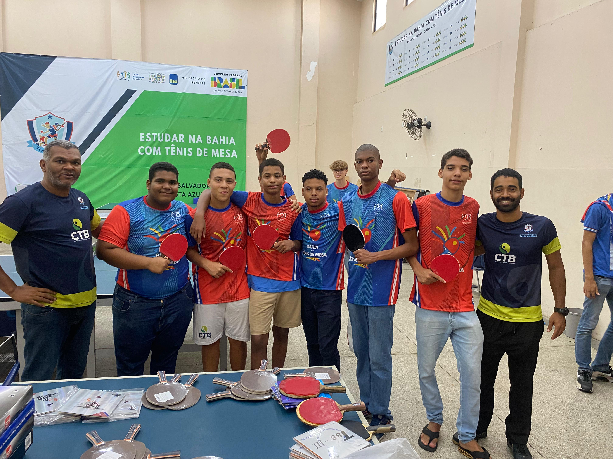

🌀 CTB HUB BOCA DO RIO
O CTB HUB Boca do Rio é uma iniciativa inovadora do Clube dos Tenistas da Bahia (CTB) que promove integração entre esporte, meio ambiente, educação e saúde mental. Localizado em Salvador, o hub atua como um centro de convivência, formação e regeneração urbana, transformando o tênis de mesa em um vetor de desenvolvimento humano, inclusão social e sustentabilidade.
Voltado para entregadores, jovens, mulheres e famílias da comunidade da Boca do Rio, o projeto une atividades esportivas, oficinas de capacitação, práticas de educação ambiental e apoio psicológico, criando uma rede de bem-estar e cidadania.
🎯 Objetivo Geral
Promover saúde física e mental, desenvolvimento socioambiental e empoderamento comunitário na Boca do Rio, por meio de atividades esportivas, ações educativas e práticas sustentáveis, consolidando o CTB HUB como um modelo de integração entre esporte, sustentabilidade e saúde coletiva.
🧭 Objetivos Específicos
- Utilizar o tênis de mesa como ferramenta de inclusão e transformação social.
- Estimular hábitos saudáveis e o autocuidado entre jovens e trabalhadores autônomos.
- Promover capacitação em práticas sustentáveis, como compostagem, reciclagem e hortas verticais.
- Oferecer atendimento psicológico e rodas de escuta quinzenais, com foco em prevenção ao estresse e ansiedade.
- Formar 50 multiplicadores comunitários em temas de saúde, esporte e meio ambiente.
- Realizar 10 torneios e 5 festivais socioambientais, estimulando engajamento e protagonismo local.
- Implantar sistemas ecológicos no espaço, como captação de água da chuva, jardins verticais e manejo de resíduos.
🧩 Eixos de Ação Integrados
🏓 Esporte e Inclusão Social: O tênis de mesa é o eixo estruturante do CTB HUB. Através dele, são trabalhadas habilidades motoras, disciplina, convivência e superação.
🌱 Educação Ambiental e Sustentabilidade: As oficinas abordam temas como compostagem, reciclagem, hortas verticais e reaproveitamento de materiais, reforçando a responsabilidade ecológica.
🧠 Saúde Mental e Bem-Estar: O HUB oferece suporte psicológico gratuito, rodas de escuta e práticas de meditação guiada, promovendo saúde emocional e autocuidado.
📚 Capacitação e Cidadania: Os participantes recebem formação em empreendedorismo social e economia circular, ampliando perspectivas de geração de renda sustentável.
📈 Impacto Social e Ambiental
O CTB HUB Boca do Rio busca gerar um impacto duradouro, medido em quatro dimensões:
- Saúde física e mental: Redução de 40% nos níveis de estresse e sedentarismo.
- Sustentabilidade urbana: Redução de até 3 toneladas de resíduos orgânicos/ano via compostagem.
- Educação ambiental: Formação de 50 multiplicadores e 12 ações práticas.
- Cidadania ativa: Fortalecimento do protagonismo local e engajamento comunitário.
💬 Mensagem Final
O CTB HUB Boca do Rio é mais que um projeto: é um ecossistema social, que transforma o esporte em veículo de cidadania, saúde e sustentabilidade. Ao unir tênis de mesa, capacitação, meio ambiente e apoio psicológico, o CTB reafirma seu compromisso com uma Bahia mais saudável, justa e verde, onde cada pessoa pode ser agente de transformação.
⚙️ Metodologia de Execução
A metodologia do projeto é baseada em educação participativa, aprendizagem pela experiência e monitoramento contínuo de indicadores, organizada em quatro fases:
- Fase 1 - Diagnóstica: Levantamento de perfil, mapeamento de parceiros e adaptação da infraestrutura ecológica do galpão-sede.
- Fase 2 - Formativa: Início dos treinos, oficinas mensais de educação ambiental e sessões quinzenais de suporte psicológico.
- Fase 3 - Mobilização: Realização de torneios, festivais e mutirões ambientais bimestrais para engajamento comunitário.
- Fase 4 - Avaliação: Aplicação de questionários de impacto e monitoramento de indicadores para divulgação pública de resultados.
📅 Cronograma Simplificado (12 Meses)
| Etapa | M1 | M2 | M3 | M4 | M5 | M6 | M7 | M8 | M9 | M10 | M11 | M12 |
|---|---|---|---|---|---|---|---|---|---|---|---|---|
| Mobilização e diagnóstico | X | X | ||||||||||
| Adequação do espaço | X | X | ||||||||||
| Aulas de tênis de mesa | X | X | X | X | X | X | X | X | X | X | ||
| Oficinas ambientais | X | X | X | X | X | |||||||
| Apoio psicológico | X | X | X | X | X | X | X | X | X | X | ||
| Torneios e festivais | X | X | X | X | ||||||||
| Monitoramento e avaliação | X | X |
💰 Orçamento Estimado
| Item | Qtde | Unit. (R$) | Total (R$) |
|---|---|---|---|
| Mesas de tênis de mesa | 8 | 2.200,00 | 17.600,00 |
| Raquetes | 120 | 65,00 | 7.800,00 |
| Bolas | 4.500 | 2,50 | 11.250,00 |
| Jardins verticais | 4 | 3.500,00 | 14.000,00 |
| Coordenador (ano) | 1 | 3.200,00/mês | 38.400,00 |
| Psicólogo (ano) | 1 | 3.200,00/mês | 38.400,00 |
| Assistentes | 4 | 1.700,00/mês | 81.600,00 |
| Oficinas e capacitações | 12 | 1.500,00/mês | 18.000,00 |
| Locação do galpão | 12 | 5.200,00/mês | 62.400,00 |
| Manutenção e limpeza | 12 | 2.200,00/mês | 26.400,00 |
| Materiais pedagógicos | 1 | 12.000,00 | 12.000,00 |
| Comunicação e mobilização | 1 | 15.000,00 | 15.000,00 |
| TOTAL ESTIMADO | R$ 342.850,00 | ||
Galeria de Fotos
 

 
